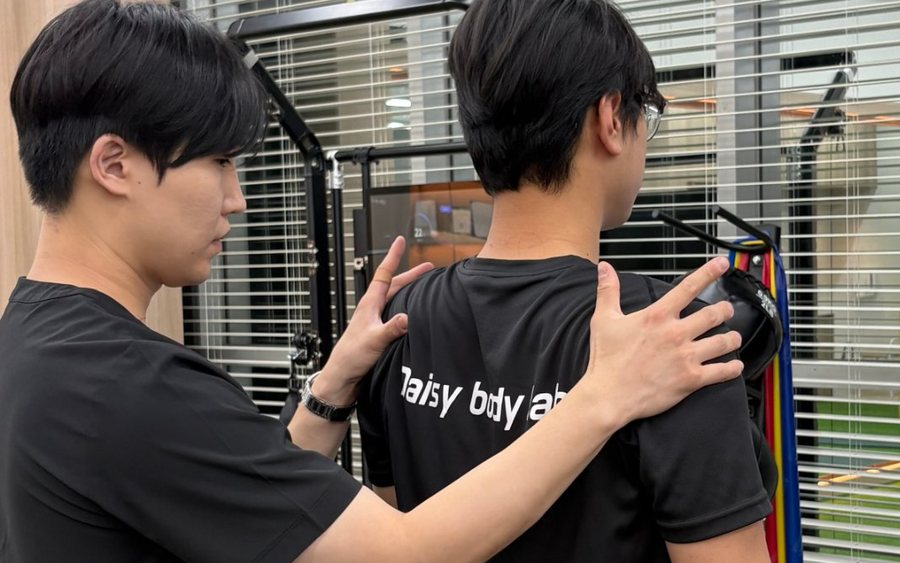
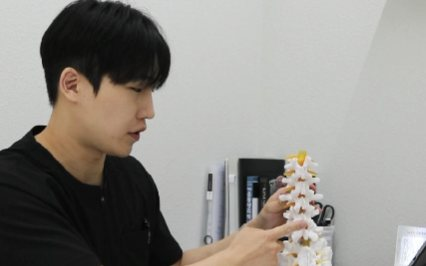
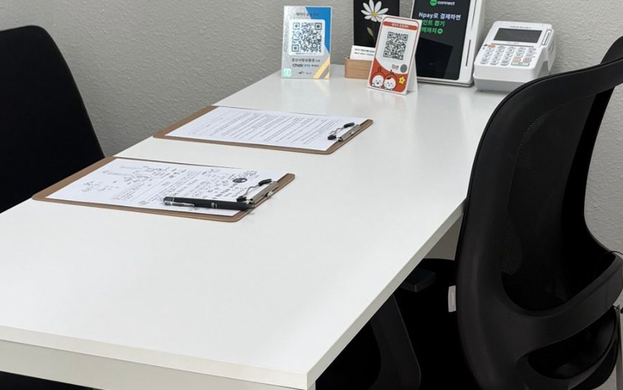
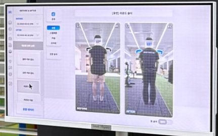

Bloom in Balance
다시 피어나는 몸의 균형
움직임을 이해하는 것부터,
변화는 시작됩니다.
체형분석과 기능평가를 바탕으로
개인에게 필요한 움직임을 찾고,
올바른 운동 방향을 함께 설계합니다.
WHY DAISY
같은 운동도, 순서와 이유가 다릅니다

01평가에서 시작합니다
첫 수업 전 체형분석과 기능평가로 현재의 몸 상태와 움직임을 확인합니다.

02움직임을 아는 지도
물리치료사 출신 대표가 기능과 움직임의 관점에서 운동을 설계합니다.

03나에게 맞춘 방향
정해진 루틴이 아니라 개인의 목표와 상태에 맞춰 운동을 구성합니다.

04변화를 함께 점검
운동 과정 중 다시 확인하며 필요한 방향으로 조정해 나갑니다.
PROGRAM
목표에 맞는 여섯 가지 프로그램
-
01 · POSTURE
체형교정 운동
한쪽으로 치우친 자세와 반복되는 움직임 습관이 고민인 분
자세히 보기 → -
02 · RECOVERY
수술 후 재활운동
병원 치료 이후, 일상의 움직임으로 돌아가는 과정을 준비하는 분
자세히 보기 → -
03 · STRENGTH
근력 및 기능 향상
기초 체력과 일상 기능을 탄탄하게 만들고 싶은 분
자세히 보기 → -
04 · PERFORMANCE
스포츠 퍼포먼스
종목 수행 능력과 움직임 효율을 높이고 싶은 선수·동호인
자세히 보기 → -
05 · DIET
다이어트 운동
반복되는 다이어트 대신, 오래 지킬 수 있는 몸과 습관을 만들고 싶은 분
자세히 보기 → -
06 · SENIOR
시니어 맞춤 운동
걷기·계단·균형 등 일상 움직임을 오래 지키고 싶은 중장년·어르신
자세히 보기 →
수술 후 재활운동은 의료기관의 치료를 대신하지 않으며, 담당 의료진의 소견을 바탕으로 운동을 진행합니다.
ASSESSMENT
운동의 방향은
평가에서 정해집니다
데이지의 모든 수업은 평가에서 출발합니다.
현재 상태를 함께 확인하고, 그 결과를 바탕으로 운동의 순서와 방향을 정합니다.
- STEP 01
상담 및 운동 목표 확인
생활 습관, 운동 경험, 원하는 변화를 듣습니다.
- STEP 02
체형분석
3D 적외선 체형분석기기로 현재 체형을 확인합니다.
- STEP 03
기능평가 및 움직임 확인
실제 움직임을 관찰하며 특징을 살펴봅니다.
- STEP 04
개인별 운동 방향 설정
평가 결과를 설명하고 운동 계획을 함께 세웁니다.
- STEP 05
운동 지도 및 변화 점검
운동 과정 중 다시 확인하며 방향을 조정합니다.
CHECKLIST
1분 몸 체크리스트로
상담을 미리 준비하세요
몇 가지 질문에 답하면 나에게 맞는 상담 프로그램과 함께 살펴볼 부위를 정리해 드려요. 결과를 카카오톡으로 보내 두면 첫 상담을 더 빠르게 시작할 수 있습니다.
- 01운동 목표
- 02불편한 부위
- 03수술·부상 이력
- 04평소 활동
- 05생활 습관 · 수면 · 희망 시간대
DAISY NEWS · YOUTUBE
영상으로 만나는
데이지 운동센터
김종건 대표가 직접 데이지가 어떤 운동센터인지 소개합니다.
EP. 01 데이지는 어떤 운동센터일까요?
유튜브 ‘데이지 운동센터’ 바로가기 →
DAISY JOURNAL
몸과 움직임에 대한 이야기
- 체형과 움직임
- 재활운동 가이드
- 운동 정보
- 회원 운동 사례
- 센터 소식
첫 이야기를 준비하고 있습니다.
Q처음 방문하면 어떻게 진행되나요?
먼저 생활 습관과 운동 경험, 원하는 변화를 상담으로 확인한 뒤 3D 체형분석과 기능평가를 진행합니다. 평가 결과를 함께 보며 설명드리고, 나에게 맞는 운동 방향과 프로그램을 제안해 드립니다.
Q체형분석 상담은 어떻게 받을 수 있나요?
네이버 예약, 카카오톡 채널, 전화로 신청하실 수 있습니다. 상담 시간과 진행 방식은 예약 시 함께 안내해 드립니다.
Q운동을 처음 하거나 체력이 약해도 괜찮을까요?
괜찮습니다. 데이지는 평가 결과를 바탕으로 현재 몸 상태에 맞는 강도부터 시작해 단계적으로 운동을 설계합니다. 운동이 처음이신 분도 기본 움직임부터 차근차근 익힐 수 있습니다.
Q병원 치료나 도수치료와는 어떻게 다른가요?
데이지는 의료기관이 아니며, 질병의 진단·치료나 도수·마사지는 하지 않습니다. 평가를 바탕으로 스스로 바르게 움직이는 방법을 익히는 운동 지도를 제공합니다. 통증이나 질환이 의심된다면 먼저 의료기관을 방문해 주세요.
Q수술 후에는 언제부터 운동할 수 있나요?
운동을 시작하는 시기와 범위는 담당 의료진의 소견이 가장 우선입니다. 수술 부위와 시기, 의료진의 운동 관련 소견을 알려 주시면 그 범위 안에서 운동을 계획합니다.
Q수업은 1:1로 진행되나요?
네, 데이지는 1:1 맞춤 수업을 기본으로 운영합니다. 팀·단체 프로그램은 제휴 페이지에서 따로 안내하고 있습니다.
Q체형분석은 어떤 장비로 하나요?
3D 적외선 체형분석기기 MOTIPHYSIO로 체형과 정렬을 확인하고, 스마트 케이블 머신 MOTY로 좌우 근력 차이와 운동 수행 능력을 기록합니다. 운동 전후 변화를 데이터로 함께 확인할 수 있습니다.
Q얼마나 다녀야 변화를 느낄 수 있나요?
몸 상태와 목표, 운동 빈도에 따라 개인차가 큽니다. 데이지는 일정 기간마다 다시 평가해 변화를 함께 확인하고, 그 결과에 맞춰 운동 방향을 조정합니다.
Q준비물이 따로 있나요?
움직이기 편한 운동복으로 오시면 됩니다. 그 밖에 필요한 사항이 있으면 예약하실 때 미리 안내해 드립니다.
Q주차할 수 있나요?
네, 주차권을 드립니다. 센터 근처 쏘카 노블타워주차장(수완동 1434)을 이용해 주세요.